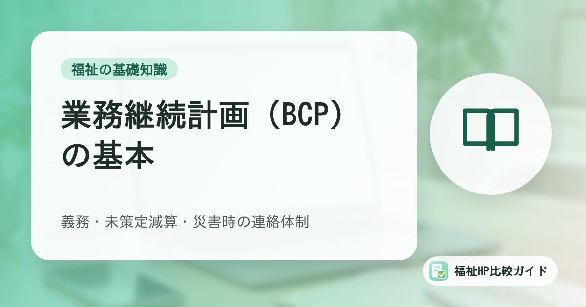

障害福祉事業所の業務継続計画（BCP）の基本｜義務・未策定減算・作り方と災害時の連絡体制

地震や台風、感染症の流行などで、いつも通りに事業所を運営できなくなることがあります。障害福祉サービスの事業所には、そうした事態に備える「業務継続計画（BCP）」の策定が義務付けられています。この記事では、厚生労働省のガイドラインをもとに、BCPの考え方と作り方、日頃から準備しておきたい連絡体制を整理します。
この記事でわかること
- BCPとは何か、防災計画との違い
- 策定・周知・研修・訓練・見直しの義務と、業務継続計画未策定減算
- BCPに盛り込む主な項目と、通所系・訪問系で準備したいこと
- 災害時に連絡がつかなくならないための連絡手段の整え方
BCP（業務継続計画）とは
BCPは「Business Continuity Plan」の略で、業務継続計画と訳されます。厚生労働省の「障害福祉サービス事業所等における自然災害発生時の業務継続ガイドライン」では、感染症や大地震などで通常どおりの業務が難しくなったときに、業務を中断させないように準備し、中断した場合でも優先業務を実施するための方策を、あらかじめ計画書にまとめておくものと説明されています。
ガイドラインでは、BCPで重要な取組として次のような例が挙げられています。
- 担当者をあらかじめ決めておくこと（誰が、いつ、何をするか）
- 連絡先をあらかじめ整理しておくこと
- 必要な物資をあらかじめ整理・準備しておくこと
- これらを組織で共有すること
- 定期的に見直し、必要に応じて研修・訓練を行うこと
防災計画との違い
ガイドラインによると、防災計画の主な目的は「身体・生命の安全確保」と「物的被害の軽減」です。BCPはこれを前提としたうえで、優先的に続けるべき重要な業務を継続する、または早く復旧させることを目指します。すでに防災計画（非常災害対策計画）がある事業所は、そこに避難の確保やサービスの継続といった視点を加えて考えると取り組みやすくなります。
策定は義務。未策定だと減算に
義務の内容
沖縄県の案内では、2021年度の報酬改定で、すべての障害福祉サービス等事業者に、次のことが義務付けられたと説明されています（経過措置は2024年3月31日まで）。
- 感染症や非常災害の発生時に備えたBCPを策定すること
- その内容を従業者に周知すること
- 必要な研修と訓練を定期的に実施すること
あわせて、計画は定期的に見直し、必要に応じて変更することが求められています。
業務継続計画未策定減算
2024年度の報酬改定で、BCPを策定していない場合の「業務継続計画未策定減算」が設けられました。島根県の案内による減算の割合は次のとおりです。
| 対象 | 減算の割合 |
|---|---|
| 療養介護、施設入所支援、共同生活援助（グループホーム）、宿泊型自立訓練、障害児入所施設など | 所定単位数の3％ |
| 上記以外のサービス（生活介護、就労系サービス、居宅介護、障害児通所支援など） | 所定単位数の1％ |
減算の対象になるのは、感染症または非常災害のいずれか、または両方のBCPが未策定の場合です。2025年3月31日までは一定の条件で減算を適用しない経過措置がありましたが、現在は終了しています（新しく創設された就労選択支援には別の経過措置があります）。
未策定がわかった時点にさかのぼって減算されることも
島根県の案内では、運営指導などで未策定が判明した場合、判明した月からではなく、さかのぼって減算となる例が示されています。「作ったつもり」で終わらせず、計画書があるか、内容が古くなっていないかを確認しておきましょう。
減算の対象サービスや扱いは指定権者によって案内のしかたが異なる場合があります。必ず所管の自治体の通知を確認してください。
BCPに盛り込む主な項目
厚生労働省の自然災害ガイドラインでは、BCPの作成例として、次のような項目が示されています。ひな形も公開されているので、ゼロから作る必要はありません。
| 項目 | 内容の例 |
|---|---|
| 総論 | 基本方針、推進体制（誰が責任者か） |
| リスクの把握 | 自治体のハザードマップで、所在地の災害リスクを確認する |
| 優先業務の選定 | 災害時にも続けるべき業務と、最低限必要な職員数 |
| 平常時の対応 | 建物・設備の安全対策、電気・ガス・水道が止まったときの対策、備蓄品 |
| 通信が使えないときの対策 | 使える連絡手段の確認、緊急連絡網 |
| 緊急時の対応 | 利用者・職員の安否確認、安全確保、職員の参集 |
| 研修・訓練、見直し | 研修とシミュレーション訓練、課題を反映した定期的な見直し |
優先業務を絞り込む
ガイドラインでは、限られた資源を有効に使うために優先する業務と最低限必要な人数を選んでおくこと、また、たとえ災害時でも生命を維持するための業務は休止できないことが示されています。備蓄の例として、入浴を優先業務から外すことで生活用水の節約にもつながる、といった考え方も紹介されています。
通所系・訪問系で準備したいこと
ガイドラインには、サービスの種類ごとに留意したい点もまとめられています。
通所系（生活介護、就労系、放課後等デイサービスなど）
- サービス提供中に被災した場合に備え、緊急連絡先は複数の連絡先・連絡手段（固定電話、携帯電話、メールなど）を把握しておく
- 相談支援事業所と連携し、利用者の安否確認の方法を整理しておく
- 台風など大きな被害が予想される場合のサービスの休止・縮小の基準をあらかじめ定め、相談支援事業所と共有したうえで、利用者や家族にも説明しておく
- 利用中に被災した場合は、安否確認のあと家族に連絡し、送迎車が使えない場合も考えて帰宅の手段を検討する
訪問系（居宅介護、重度訪問介護など）
- 職員が利用者宅を訪問中、または移動中に被災することを想定し、その場合の手順を決めておく
- 避難先でサービスを提供することも想定し、地域の避難方法や避難所の情報、関係機関とのつながりを日頃から確認しておく
災害時の連絡手段を整える
災害時は、固定電話や携帯電話がつながりにくくなることがあります。ガイドラインでは、次のような準備が示されています。
- 携帯メール、パソコンのメール、SNSなど、被災時に施設内で実際に使える方法と、使える台数・バッテリー容量・使い方を記載しておく
- 複数の連絡手段で関係機関と連絡が取れるようにしておく
- 整備した緊急連絡網は、いざというときに使えるよう定期的にメンテナンスする
- 同じ被災地域の中では連絡が取りにくくなるため、遠方の交流のある施設などを中継点にして情報を集める方法（三角連絡法）も検討する
連絡手段を決めるときは、「誰が」「どの手段で」「誰に」連絡するかを、BCPの中で具体的にしておくことが大切です。例えば、サービスの休止を利用者や家族、相談支援事業所に知らせる場合、電話・メール・連絡用のアプリ・事業所のホームページやSNSなど、どの手段を使い、誰が発信するのかを決めておくと、当日の混乱を防げます。
連絡体制のチェックリスト
- 職員・利用者・家族の緊急連絡先は、最新の情報になっているか（年に1回など、確認の時期を決めているか）
- 連絡網は紙でも保管しているか（停電やパソコンの故障に備えて）
- 事業所の固定電話以外の連絡手段を、利用者や家族に伝えてあるか
- 休止や再開を知らせる文面のひな形を用意しているか
- ホームページやSNSを更新できる職員が、複数いるか
なお、利用者の記録や請求データが使えなくなる事態に備えたバックアップの考え方は「ランサムウェア対策のバックアップ入門」で解説しています。BCPには、サイバー攻撃などでデータが使えなくなった場合の手順も加えておくと安心です。
作り方と見直しの進め方
- ひな形を入手する：厚生労働省のページで、自然災害・感染症それぞれのガイドラインやひな形が公開されています。兵庫県や沖縄県のページでは、厚生労働省のBCP作成支援に関する研修も案内されています
- ハザードマップで所在地のリスクを確認する：浸水、土砂災害、地震の揺れなど、事業所ごとに想定すべき災害は異なります
- 優先業務と最低限の人数を決める：利用者の命と健康を守るために欠かせない業務から整理します
- 職員に周知し、研修と訓練を行う：机上で手順を確認するだけでも課題が見つかります
- 定期的に見直す：訓練で見つかった課題、職員や利用者の入れ替わり、ハザードマップの更新などを反映します
BCPの策定状況は、運営指導などで確認されます。公表が求められる情報の全体像は「障害福祉事業所がホームページ等で公表すべき情報まとめ」も参考にしてください。
まとめ
業務継続計画（BCP）は、災害や感染症が起きても利用者の安全を守り、必要なサービスを続けるための計画です。障害福祉サービスの事業所では、策定・職員への周知・研修と訓練・定期的な見直しが義務付けられており、未策定の場合は報酬が減算されます。
厚生労働省のガイドラインとひな形を使えば、一から考える必要はありません。まずはハザードマップで自分たちの事業所のリスクを確かめ、優先業務と連絡体制を決めるところから始めましょう。特に連絡手段は、ひとつに頼らず複数を用意し、定期的に見直しておくことが大切です。
よくある質問
感染症と自然災害、両方のBCPが必要ですか？
必要です。島根県の案内では、感染症または非常災害のいずれか、または両方の業務継続計画が未策定の場合に、業務継続計画未策定減算の対象になるとされています。厚生労働省は、感染症と自然災害それぞれについて業務継続ガイドラインを公表しています。
法人内に複数の事業所があります。BCPは事業所ごとに必要ですか？
厚生労働省の自然災害ガイドラインは、施設・事業所等の単位でBCPを作成することを前提としています。複数の事業所を持つ法人では、法人本部としてのBCPも別途作成し、事業所のBCPと連動させることが望まれるとされています。扱いに迷う場合は、指定権者に確認してください。
訓練はどのように行えばよいですか？
ガイドラインでは、作成したBCPを関係者と共有し、平時から内容に関する研修と、BCPに沿った訓練（シミュレーション）を行うことが示されています。責任者が不在の場合や、電気・水道が止まった場合など、さまざまな状況を想定して机上で手順を確認するだけでも、計画の抜けや課題が見つかります。
参考資料・出典
- 厚生労働省「障害福祉サービス事業所等における自然災害発生時の業務継続ガイドライン等について」
- 厚生労働省「障害福祉サービス事業所等における自然災害発生時の業務継続ガイドライン」（PDF）
- 沖縄県「障害福祉サービス事業所等におけるBCP（業務継続計画）の策定」
- 島根県「業務継続計画未策定減算の取扱いについて」
- 兵庫県「障害福祉サービス事業所等におけるBCP（業務継続計画）の策定について」
制度・料金・統計は改定される場合があります。最新の内容は各出典の公式情報でご確認ください。